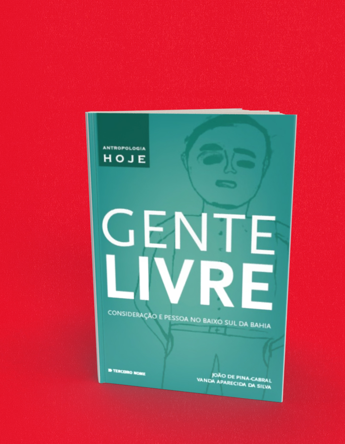

Gente Livre consideração e pessoa no Baixo Sul da Bahia
A compra acontece no site da livraria, em uma nova aba. Consulte lá os preços e a disponibilidade. Procure pelo título ou ISBN deste livro.
- Autoria / créditos
- João de Pina-Cabral e Vanda Aparecida da Silva
- Coleção
- Antropologia Hoje
- ISBN
- 9788578161125
- Páginas
- 168
- Formato
- 14 x 21 cm
- Acabamento
- brochura
Sobre o livro
Gente livre: um ensaio sobre a “liberdade” decorrente das formas de vida dos que vivem no Baixo Sul da Bahia.
Pela inexistência de bens móveis herdáveis e também pela constante necessidade de fugir ao constrangimento do favor, muitos dos que vivem no Baixo Sul da Bahia encontram-se à disposição para se mover do seu local de origem durante os períodos iniciais da vida adulta. A maior parte das terras onde vivem pertence a grandes latifundiários que, por sua vez, também detém o acesso aos meios de obtenção do sustento, despertando a necessidade de se buscar uma vida melhor em outro lugar.
A narrativa antropológica, já em seu primeiro capítulo, lança uma discussão, que se prolongará pelos seguintes, sobre os processos característicos que constituem as pessoas das classes populares baianas. Tendo como ponto de partida a consideração, são abordadas a vida familiar e doméstica, os grupos de cooperação local e as relações de endividamento. Outro tema importante é o da criação (de crianças), processo no decorrer do qual se consolidam as solidariedades que marcam a vida da pessoa.
O ensaio de Gente livre surgiu do encontro do antropólogo português João de Pina-Cabral e da antropóloga brasileira Vanda Aparecidada Silva, em que o conhecimento consolidado que João tinha dos espaços e das pessoas combinou-se com a perspicácia etnográfica de Vanda e seu conhecimento profundo sobre a sociedade rural brasileira.
João de Pina-Cabral é professor de Antropologia Social e diretor da Escola de Antropologia e Conservação da Universidade de Kent em Cantuária, Reino Unido. É autor de diversos livros, entre os quais Filhos de Adão, filhas de Eva: a visão do mundo camponesa do Alto Minho (Lisboa, D. Quixote, 1989), Os contextos da antropologia (Lisboa, Difel, 1991), Em terra de tufões: dinâmicas da etnicidade macaense (em colaboração com Nelson Lourenço, Instituto Cultural de Macau, 1993), Aromas de urze e de lama (Lisboa, Fragmentos, 1993), O homem na família (Lisboa, Imprensa de Ciências Sociais, 2002), Between China and Europe: Person, Culture and Emotion in Macao (Londres, Berg, 2003) e As canoas da Bahia (CD-Rom, Lisboa, Imprensa de Ciências Sociais 2012).
Vanda Aparecida da Silva é doutora em Ciências Sociais, pesquisadora-colaboradora no Cria (Centro em Rede de Investigação em Antropologia do Instituto Universitário de Lisboa) e autora dos livros As flores do pequi: sexualidade e vida familiar entre jovens rurais (Campinas, Centro de Memória, Editora Arte Escrita, 2007), Sertão de jovens: antropologia e educação (São Paulo, Cortez, 2004), e co-oganizadora da coletânea de ensaios Mundo rural: mito ou realidade? (com Renato Miguel do Carmo, São Paulo, Annablume, 2013).
← Voltar ao catálogo